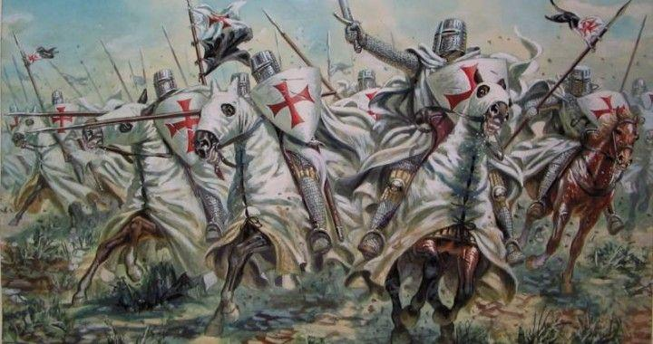
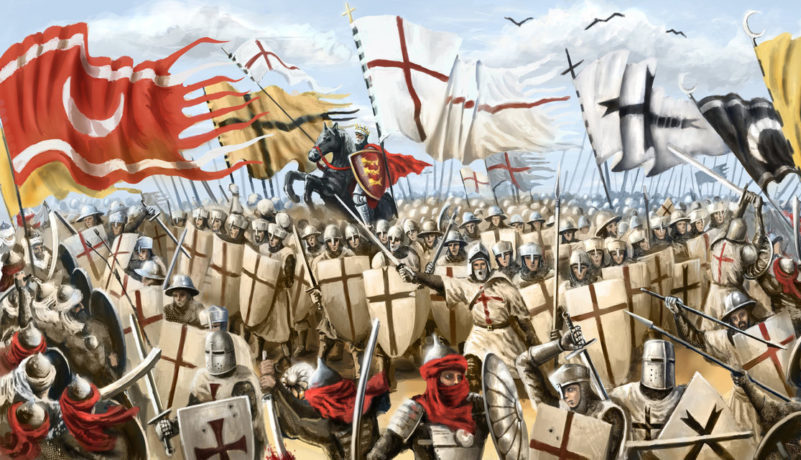
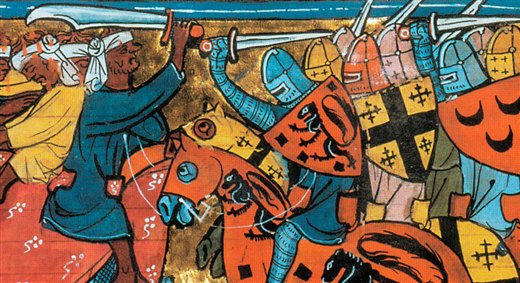
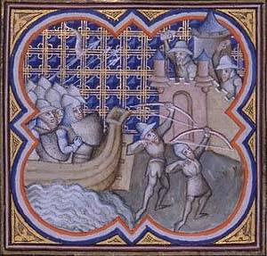
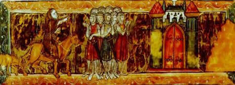

DesCobrindo História |
|---|
| As Cruzadas |
Chama-se cruzada a qualquer um dos movimentos militares, de caráter parcialmente cristão, que partiram da Europa Ocidental e cujo objetivo era colocar a Terra Santa (nome pelo qual os cristãos denominavam a Palestina) e a cidade de Jerusalém sob a soberania dos cristãos. Estes movimentos estenderam-se entre os séculos XI e XIII, época em que a Palestina estava sob controle dos turcos muçulmanos. Os ricos e poderosos cavaleiros da Ordem de São João de Jerusalém (Hospitalários) e dos Cavaleiros Templários foram criados pelas Cruzadas. O termo é também usado, por extensão, para descrever, de forma acrítica, qualquer guerra religiosa ou mesmo um movimento político ou moral. |
 |
|---|---|
|
Tradicionalmente se fala em nove Cruzadas, mas, na realidade, elas foram um movimento quase permanente. No final do século XI, a sociedade feudal começava a apresentar sinais de mudanças. A igreja, principal instituição da Europa ocidental, enfrentava problemas com a corrupção de muitos de seus bispos e abades, que levavam uma vida luxuosa e abandonavam suas obrigações religiosas. Nos feudos, uma população cada vez mais numerosa não encontrava meios de produzir alimentos suficientes para todos. |
|
|
Nesse contexto, surgiram as Cruzadas, uma espécie de guerra santa empreendida pelos católicos contra os muçulmanos que dominavam Jerusalém e outras regiões consideradas sagradas pelos cristãos do Oriente Médio. Nobres, camponeses, crianças, mendigos, enfim, grande parte da sociedade europeia se envolveria nesses combates, que se estenderam por mais de duzentos anos e representaram, para todos esses personagens, uma alternativa econômica e social. Entretanto, a importância maior das Cruzadas está no fato de elas terem ajudado a iniciar um processo que colocaria fim ao isolamento da sociedade feudal. |
|
|
Ao mesmo tempo que cruzavam o continente e o mar Mediterrâneo e estabeleciam contatos com outros povos, os europeus fortaleciam as cidades e o comércio.Com isso, subvertiam a ordem do mundo rural, na qual a sociedade medieval estava fundamentada. Assim, as Cruzadas, que de início representaram uma alternativa para a manutenção da sociedade medieval, com o tempo se mostraram responsáveis pela formação de uma outra ordem social. (Principais rotas das cruzadas) |
|
| Convocação das Cruzadas | |
|
Durante a Idade Média, muitos cristão costumavam ir em peregrinação aos locais onde Jesus Cristo viveu e fez suas pregações (Jerusalém, Belém, Nazaré, etc.). Esses locais , conhecidos como Terra Santa, eram considerados sagrados para os cristão. Em consequência do expansionismo dos povos árabes, Jerusalém foi tomada no ano de 638. Os árabes eram muçulmanos – acreditavam em Alá como seu único deus e no profeta Maomé -, mas toleravam os peregrinos cristãos. Em 1071, entretanto, Jerusalém foi conquistada pelos turcos, também muçulmanos. Desde então passou a haver perseguição aos cristãos que iam visitar a Terra Santa. Os turcos estavam expandindo os seus domínios e ameaçavam conquistar Constantinopla, capital do império Bizantino, também de tradição cristã |
 |
|
A tensão entre cristãos e muçulmanos levou o papa Urbano II a convocar uma expedição de retomada da terra Santa. O papa, que acusava os turcos de assassinarem os peregrinos e profanarem os lugares santos, procurou encorajar os cristãos do ocidente à guerra. Para viabilizar a expedição, convocou senhores feudais, bispos e população em geral. Os primeiros voluntários escolheram como símbolo da expedição uma cruz pintada nas suas roupas, daí o nome Cruzadas para esse movimento. |
|
| Para além da fé | |
|
O movimento das Cruzadas deve ser compreendido como parte do processo de mudanças do feudalismo durante a Baixa Idade Média. A sociedade feudal era agrícola, auto-suficiente, voltada apenas para a subsistência. Tal tipo de organização não conseguia atender às necessidades de uma população crescente. Assim, parte dessa população encontrava-se marginalizada, com muitas pessoas realizando ataques e saques aos castelos e às aldeias. |

Entre os nobres, a grande parte via nas Cruzadas uma possibilidade de aumentar sua fortuna, já que a região da Palestina era considerada de grande riqueza. Muitos jovens pertencentes à nobreza viam uma oportunidade de conquistar algo para si, já que, por não serem filhos primogênitos, não herdariam feudos. |
| Combatendo pela fé | |
|
Ao todo foram realizadas oito Cruzadas, em um período de cerca de 200 anos. A primeira, organizada pelo papa Urbano II, obteve êxito. Para essa Cruzada, organizaram-se exércitos em toda a Europa. Oficialmente, ela reuniu-se em Constantinopla em novembro de 1096. Era um exército imenso, conduzido por senhores feudais. Essa Cruzada conseguiu expulsar os turcos da grande parte da Terra Santa e fundar o reino de Jerusalém. |
|
(Miniatura do século XIV representando a tomada de Jerusalém pelos cruzados) |
Após a derrota, os turcos passaram a atacar os cruzados com frequência e conseguiram reconquistar a Terra Santa. Novas expedições foram então convocadas pelos cristãos. Entretanto, eles não tiveram o mesmo êxito da primeira.Mal organizadas, sem liderança e divididas internamente por rivalidades entre nobres, várias Cruzadas não conseguiram chegar à Palestina. Na Segunda Cruzada, por exemplo, os combatentes que vinham de diversas regiões da Europa, formaram grupos isolados e foram facilmente derrotados pelos turcos. |
| Consequências das cruzadas | |
|
Os participantes da Quarta Cruzada, financiada por comerciantes venezianos, ao chegarem a Constantinopla, saquearam a cidade e invadiram as igrejas para tirar os objetos de valor. Os saques provocaram o enfraquecimento do comércio de Constantinopla e o fortalecimento das cidades da península Itálica, que passaram a monopolizar o comércio de especiarias no Mediterrâneo. |
|
|
Com a Quarta Cruzada ficou claro que, além de motivos religiosos, os cruzados estavam mobilizados também por interesses econômicos. Apesar de não terem alcançado totalmente seu objetivo religioso, as Cruzadas promoveram grandes mudanças em toda a Europa, como a reabertura do Mediterrâneo à navegação e ao comércio europeu. Isso possibilitou a intensificação do comércio entre o Ocidente e o Oriente, interrompida em grande parte pela expansão muçulmana. |
  |